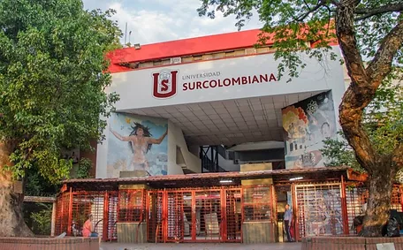

¿CUÁL FUE LA PRIMERA FACULTAD DE INGENERIA EN LA USCO?

-
En 1976 se creó el programa de Ingeniería Agrícola, bajo la
dirección del docente, Ingeniero Agrónomo, Fabio Salinas
Tejadas.
-
Seguidamente el 22 de julio de 1982 se aprobó la apertura del
programa de Ingeniería de Petróleos, justificado por el
destacado protagonismo de la región en la producción
petrolera. El programa de ingeniería de petróleos empezó con
su primera cohorte en febrero de 1983.
-
En el año 1994 inicio labores el programa de Ingeniería
Electrónica con su programa de tecnología en Electrónica
desarrollado en convenio con el instituto Pascual Bravo de
Medellín y posteriormente en el semestre A de 199 inicio como
programa propio el de Ingeniería Electrónica siendo su primer
jefe de programa el Ing. Neisar Salazar Ramírez.
- Ingeniería Civil: En el año 2005.
- Ingeniería de Software: En el año 2012.
- Ingeniería Agroindustrial: En el año 2015.